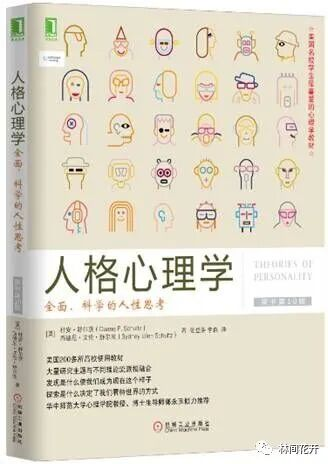

跟着人性大师学习人性
（来自网络）
1月份，在学完阳老师的「行为分析课四期」后，报了他新开的阅读课「人性大师课」。历时七个月，这门课在8月7日结业，有幸成为优秀学员分享这段学习历程，以下是结业典礼上的分享，整理成文字。
如何学
「人性大师课」一共有七个本书，以月为单位，一个月读一本。
一月份的教材是美国心理学教授杜安.舒尔茨夫妇联合主编的教材「人格心理学」。这本书如一张地图，围绕心理学的流派精神分析、行为主义、人本主义、认知主义、社会学习流派等角度展示心理学大师的生平、理论等，不同过往的心理学教材，这本书有故事有理论有研究，言简意赅，越读越有趣。

书中汇聚了耳熟能详的心理学大师：开创精神分析流派的弗洛伊德，受他流派影响的荣格、阿德勒、霍妮、埃里克森等。最早提出「人格心理学」的鼻祖奥尔波特，他奠定了这门学科在心理学中的地位；一生顺风顺水的行为主义流派斯金纳，他是20世纪「世界100名心理学家」榜单中排名第一。
极其天才如认知流派乔治.凯利，自成一体，提出「个人构念」理论，探索我们看待世界的方式，强调「人人都是科学家」；新行为主义流派班杜拉，提出社会学习理论，自我效能，榜样作用等概念；还有创立人本主义流派的罗杰斯，与来访者建立「无条件关注」原则。
书中20多位心理学家，显然不能在短时间内一一学习。拿到教材后，第一步解决「如何学」的问题，重点读哪些大师？哪些一扫而过？
我最初的做法，沿用开智的抽样阅读法（提出阅读假设-定位核心章节-验证假设），将教材抽样了一轮，还是不够用。
有次在知识星球上看到阳老师写道：弗洛伊德极其智慧，凯利极其理性，荣格是师奶杀手，阿德勒是鸡汤高手。灵机一动，何不从阳老师的另一门课「行为分析课」中抽样阅读，他推崇谁，他不推崇谁，会有明显的偏好，就找出他最推崇的大师来阅读。
因此，做了一个表格，对书中提到的20多位大师一一打分，以得分结果挑出七位大师，比课程中（后来）提供的多出一位奥尔波特，他是人格心理学的奠基者，是个重要人物，但他的理论不是最有代表性的。跟着课程组，把精力放在学习弗洛伊德、埃里克森、斯金纳、班杜拉、罗杰斯、凯利六位大师。
学习心理学，核心学习人性。这六位大师是如何看待人性的，人本恶还是人本善？人是自由意识者还是受先天的影响，停滞不前？站在人性大师的肩膀上，人性的面纱从而揭开。
任何一种人格理论很重要的方面，在于理论家的人性观。每一位理论家都有一种人性观，阐明了有关人性的基本问题。
学习收获
1、升级阅读方法论
人性大师课，重点在人，读的是人物传记，如何读？前面提到的抽样阅读法，显然不够用。
在第一个月的弗洛伊德讲座中，阳老师示范了如何用「人性系统论」框架来分析弗洛伊德何以成为弗洛伊德，极其精彩，就如听他在讲故事一样，津津有味。人性系统论是阳老师在他的另一门课程「行为分析课」上提出的一个理论，以科学的组合方法分析全面一个人，他是内向外向，情绪稳定不稳定，聪明不聪明；他的动机是自主还是顺从；他的人生故事是怎么样的？
用人性系统论作为阅读人物传记的利器，无疑是最佳的阅读方式，之后的五位大师，采用同样的框架，分析他们一生的故事，学完人性大师课，我有意识地把人性系统论用在阅读其他的人物传记上，重读了「富兰克林自传」，有新的收获。
人性系统论不仅适合用为阅读，也适合用来辅助写人物传记。在给家人写传记时，不只是用时间的流水帐方式记录家人的过往经历，而是分析她的人性系统，她的性格如何，有哪些事件体现，还有她讲述了一个什么样色调的故事，黑暗还是光明？主人公是追求成就与权力，还是爱与关系？她的叙事节奏是苦尽甘来，还是先甜后苦？她在每个时期的矛盾是什么，她又是如何解决的？
对我个人来说，人性系统来可以用来发现自己的优劣势，我性格的优势是什么，如何扬长避短？
上课之前，我学了行为分析课，有强大的理论打底，再来学习人性大师的理论，身心轻松。
有个跟我一起报名大师课的朋友，没上行为分析课。问她学习进度如何时，她说没太大兴趣，所学内容过时（弗洛伊德的精神分析已有百年历史），作业没写，纯捐学费。
2、立体学习，攻克人生难题
多门课一起学，更系统全面。今年从「从行为分析」到「高手的习惯」，到「人性大师课」再到人生发展咨询实务，立体学习，打通知识的壁垒，从理论到运用，对行为、人性有更深刻的认识。学习心理学，站在人性大师的源头，学习人性大师的理论和人性观，站得高，看得远，学习更快。有了前面的学习基础，八月份再来学习阳老师的「人生发展咨询实务」，就像追剧一样，欲罢不能，对人生发展中出现的难题，也能结合学过的知识融会贯通，尝试给出巧妙解。
3、看事物一体两面
要看到好的一面，也要看到不好的一面。每位人性大师都值得学习，但也有局面的一面。在每月的人性大师讲座中，阳老师都会站在21世纪当下，辩证去看大师提出的理论，好在哪，局限在哪，并给出当下的学习启示。
曾在心理学平台工作过一阵，当时公司还在推崇精神分析流派，每天的内容都是负面居多，那时激不起学习兴趣，没有认真学习四大流派，要么全盘接受一个流派，要么全盘否定一个流派，完全不懂得要如何去看待一个理论的优点和局限。直到上了行为分析课和人性大师课，一步步看着阳老师是如何取其精华，去其糟粕，以及如何修正大师的理论，在这过程中，见证了「人性系统论」的诞生，除了赞叹还是赞叹。
4、输出与后续学习
七个月的学习，完成41份作业，写了几百张卡片，输出三篇系列文章，每篇文章4000字以上，其中两篇获得开智的转载。
详细阅读：重新认识弗洛伊德 、走进人性大师埃里克森：他的人生故事和理论发展**
遗憾的是，原本计划6位大师，输出6篇笔记，形成系列。在一季度，一热情高涨，写了三篇，之后给其他事耽搁，没写完，之后再补上三篇。
把习得的「人性系统论」框架用在阅读人物传记和写传记上。期间重读了「富兰克林传」，有意识分析富兰克林的人性系统，有不一样的收获。详细阅读：「富兰克林的富兰克林」。
详细阅读：富兰克林的富兰克林｜人物传记
从大师中获得的启发
*1、*每个人的人性系统独一无二，有优点也有缺点，与其视缺点为缺点，不如把缺点变优点，比如弗洛伊德把「高神经质」发挥到极致，用来创作，变成作品。
即使竞争意识不强，顺从的人也能走出一片天地。顺从如埃里克森，在采访镜头前，需要他回答的问题，他还要询问下妻子，但也不妨碍他提出「同一性」理论和「毕生发展八阶段」理论，成为一名大师。
*2、*每一位大师都经历过低谷，他们厉害之处，逆向利用低谷，绝地反弹，创作出作品。不论是弗洛伊德，埃里克森，还是罗杰斯，都如此。
3、找到意象原型
我们一生无非解决三个问题：我是谁，从哪里去，去往何方。
每位大师都清楚在成为谁，找到自己的定位。从大脑爱偷懒的最省力原则来说，找到匹配人性系统的意象原型，可以降低大脑的算力，生活中少很多事情。如斯金纳，放弃了意想的小说家的意象原型后，他发挥高智商高理商高尽责的特点，找到了「自信的工程师」意象原型后，如一台按合法方式行事的机器人一样，一生简单又自律，成果斐然。
4、六位人性大师六个个案
人生发展的问题，终究要回归到解决人与情境的问题上，哪些是个人努力的结果，哪些是情境助力的，哪些是个人与情境互动影响的。六位大师以不同的人生经历，变成了六个来访者，为我们学习咨询，提借了样本。他们在哪个人生周期经历了高峰或低谷，或是转折点，出作品等，都值得我们学习。
5、学习大师的理论
*弗洛伊德*关注冲突，提出了人格结构：本我、自我、超我，他重视冲突，视冲突为一切的来源。放在人生发展上看，解决了冲害，人生得以发展。
一生都是寻找自我认同的*埃里克森*，提出了「同一性」理论，也就是行为分析课中的意象原型，还有他提到的「八阶段理论」。
*斯金纳*不关注情绪、意识、人格、信念等，以极端的方式关注行为，提出了行为激活理论。受他的理论影响，五月份，养成了读诗的习惯，在读诗中叠加了时间（清晨）、空间（室外）、任务（跑步）、人际（三五人）、情绪（积极），以至从未认真读过诗，在那段时间，坚持每天一首，读完了古诗十九首，并在后续读完了「古诗源」。
*班杜拉*的「榜样作用」、「自我效能」对我启发很大，比如在开智的学习共同体中，与同侪一起学习；在需要大脑计算的事情上，自我暗示，增加效能感：我可以做得更好；在育儿上，育儿先育己，言传身教，成为一个榜样妈妈。
我把*罗杰斯*「无条件关注」原则，迁移到育儿中，以无条件养育作为育儿原则，提供爱、安全、积极回应的育儿环境。
*凯利*最大的贡献在于，提出了「个人构念」系统，让我看到了行为改变的希望，任何的改变，最终都要回到个人概念上，只有重构了概念，那么行为就会跟着改变。
小结
人是运动的，我们自己推动着自己，而不是其他人或者是其他事推动着我们。--乔治.凯利
学习是为了让自己变得更好，在凯利的理论中，我看到了改变的空间，找到能改变的变量，如情境，放大个人与情境的匹配程度，就能从现实中的自我走向理想中的自我，创造出不一样的自我。
感谢开智和阳老师，开发了这么多好课程，把复杂的人性变得有迹可循，深刻理解人性。
ref 「人性大师课」、「人性大师课系列讲座」、「行为分析课」
20220812